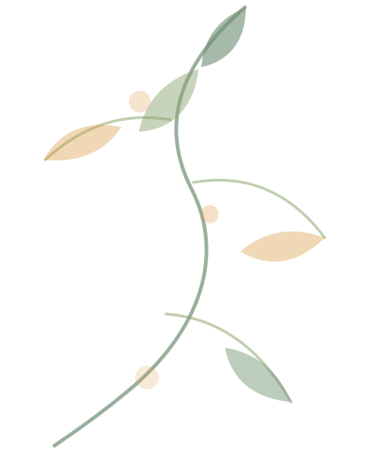

会务活动策划与执行
能从活动主题、流程安排、嘉宾邀约、物料准备、现场执行到后续宣传复盘进行统筹。

Core Capabilities
页面重点不堆职位名，而是把可迁移的组织能力讲清楚：活动如何落地，服务如何闭环，材料如何沉淀。
能从活动主题、流程安排、嘉宾邀约、物料准备、现场执行到后续宣传复盘进行统筹。
熟悉商会会员服务、企业走访、需求收集、资源连接和后续跟进。
能撰写公众号稿件、活动报道、党建宣传材料、工作总结、会议材料和对外宣传文案。
能处理多线程事务、台账资料、会议纪要、活动复盘，并用 AI 工具提升信息整理和文稿输出效率。
Selected Projects
每个案例都按“问题、我做了什么、结果沉淀”呈现，方便招聘方快速判断岗位匹配度。
会务活动
参与组织约 300 人规模的年会活动，需要统筹流程、嘉宾、场地、物料、现场执行和会后宣传。
大型活动统筹 / 多方沟通 / 现场执行 / 宣传复盘 / 细节推进
企业服务
商会会员企业需求分散，需要持续收集企业信息、理解企业需求，并推动资源连接和活动参与。
企业服务 / 需求整理 / 资源对接 / 会员运营 / 跟进闭环
党建宣传
党建工作需要活动策划、材料撰写、宣传报道、台账整理和资料归档。
党建宣传 / 文案撰写 / 材料规范 / 台账整理 / AI 提效
AI 提效
会务、宣传、材料和企业服务工作中存在大量重复性信息整理与文稿输出。
AI 工具应用 / 信息整理 / 工作流意识 / 文稿提效 / 复盘沉淀
Working Method
我更关注一件事从想法到结果的路径：目标、任务、推进、输出、归档和复用。
先确认活动或事项要达成什么结果。
把事项拆成时间、人员、物料、嘉宾、宣传、资料、风险和后续跟进。
持续对接各方，盯节点、补细节、处理临时变化。
整理照片、视频、会议内容和亮点，形成公众号稿件、短视频或宣传材料。
沉淀活动资料、台账、经验和可复用模板。
用 AI 辅助材料撰写、会议纪要、活动复盘、待办清单和宣传初稿。
Role Fit
About Me
我性格稳定温和，沟通直接清楚，做事细致，有责任心。我喜欢有挑战、有反馈、有成就感的工作，也愿意在真实项目中持续学习。比起只完成一件事，我更希望把事情做成流程、模板和可复用经验。